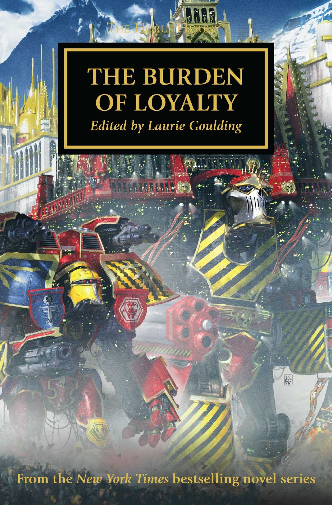

THE WOLF KING

Author: Chris Wraight
Format: Novella
After the fighting at Prospero, the Space Wolves are trapped in the Alaxxes Nebula by an Alpha Legion fleet. With supplies running low, Leman Russ must find a way for his warriors to survive.
Listed in: The Burden of Loyalty.
Introduction reviewed against Black Library’s description on 2026-09-27. The publisher page may contain spoilers.
Publication facts: publisher source, checked 2026-09-26.
Open this work in the interactive Archive to track reading progress and explore related works.